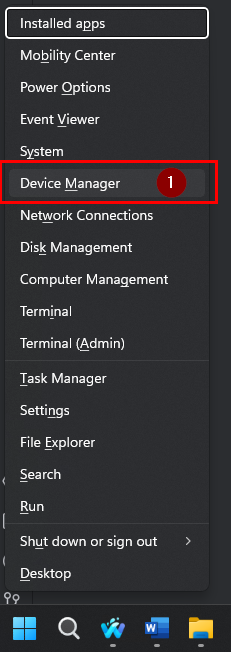
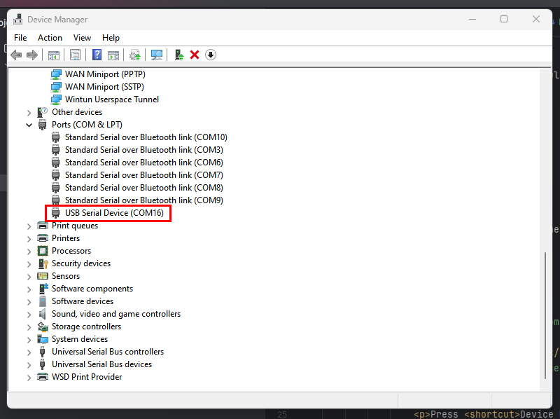

To start attacking the esp32 chip we should see what is in the firmware. To do this we will use esptool to dump.
Install Esptool
pip install esptool
Identify ESP32 Com Port
Finding the com port can be useful as not all tools can automatically find what you are looking for. It depends on your platform the steps you need to take select from the drop down your os or the ardunio software.
Windows Find Com Port
Press Windows Key + X
Press Device Manger to launch device manger.

Scroll down to Ports (COM & LPT) and expand the menu
Plug your badge into your computer and turn the badge on.
The device tree will refresh and you should see a new device under Ports (COM & LPT). This will be the communication port used to talk to the device.

This command will list out all active serial devices
ls /dev/tty*
You may need to try a couple to see which one works or you can run this following command to see what each one is
for dev in /dev/ttyUSB*; do sudo udevadm info -q all -n "$dev" | grep -E 'DEVNAME|ID_MODEL'; done
This command will list out all active serial devices
ls /dev/cu.*
You may need to try a couple to see which one works or you can run this following command to see what each one is
ls /dev/cu.* | grep -i usb | while read dev; do ioreg -p IOUSB -l -w 0 | grep -A 10 "$dev"; done
Install the Ardunio IDE
Dumping Flash
Understanding the Chip
To dump the flash we will need to know two things the port and the size of flash. To find size of flash we can run the following command
python -m esptool --port {COMPORT} flash_id
Sample Output:
C:\Users\NSSte>python -m esptool --port COM16 flash_id
esptool.py v4.8.1
Serial port COM16
Connecting...
Detecting chip type... ESP32-S3
Chip is ESP32-S3 (QFN56) (revision v0.2)
Features: WiFi, BLE
Crystal is 40MHz
MAC: 24:58:7c:f4:8e:30
Uploading stub...
Running stub...
Stub running...
Manufacturer: c8
Device: 4017
Detected flash size: 8MB
Flash type set in eFuse: quad (4 data lines)
Flash voltage set by a strapping pin to 3.3V
Hard resetting via RTS pin...
We see we have 8MB of flash, and we also have the MAC address in case we lose the display